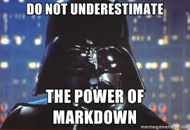

Markdown is a lightweight markup language. Markdown is usally used for document writup, for readme file, and many notebook support variant of markdown for documentation. Markdown is very easy to learn and to become master. There are many other flavoured version of markdown.
Use-cases of Markdown
Markdown is good tool for web-writer, as we can easily convert .mmd file into HTML file. Markdown allow us to write simple text format then we can convert it into some other rich version, like HTML. I write this document in first Markdown then convert it into HTML using StackEdit(https://stackedit.io/)
Markdown is highly used for documentation for programme.
Many notebooks and code repository uses markdown for readme file. In jupyter notebook, there is Jupyter flavoured markdown. In github, there github flavoured markdown, we used write README file in markdown.
We can use markdown for managing personal notes. I personally used markdown for my personal writing and notes.
# Hello world!
## Hello world!
### Hello world!
**Hello world**
Hello world
*Hello world!*
Hello world!
***Hello world!***
Hello world!
<br> is used for Line braking in markdown.
We can use blockquote in markdown by using >.
Example :
> I love markdown.
I love markdown.
Nested blockquotes
Example:
> I love markdown. >> I love LaTeX too!.
Rendered output:
I love markdown
I love LaTeX too!
1. Art of programming 2. Operating system 3. DBMS 1. SQL 2. NoSQL 3. Map reducing framework
Rendered output :
Art of programming
Operating system
DBMS
SQL
NoSQL
Map reducing framework
- Data structure - Deep learning - MAP - Monolithic architecture - SOA - Microservice architecture - IRS
Rendered output
Data structure
Deep learning
MAP
Monolithic architecture
SOA
Microservice architecture
IRS


[Ping me](https://shreeshiv.github.io/)